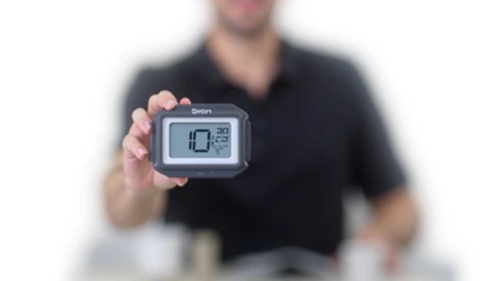

تمارين سرعة ردة الفعل للمبتدئين
تعرّف على أبسط التمارين لتحسين سرعة استجابتك أثناء السباق دون الحاجة لمعدات غالية...
اقرأ المزيدطرق علمية لقياس تحسّن سرعة ردة فعلك ولياقتك البدنية مع نصائح عملية للمراقبة المنتظمة
في رياضة الكارتينج، لا يمكنك تحسين ما لا تقيسه. القياس المنتظم يساعدك على فهم نقاط قوتك والمجالات التي تحتاج إلى عمل أكثر. إنّه ليس عن الأرقام فقط — بل عن رؤية تطورك الفعلي على المسار.
سواء كنت تتابع سرعة ردة فعلك أو قوتك الأساسية أو مرونتك، فإن امتلاك نظام تتبع واضح يعطيك الثقة والحافز. تعرّف على الطرق الفعّالة لقياس تقدمك وجعل التدريب أكثر كفاءة.
تعلم أفضل الطرق لتسجيل بياناتك، تحديد المؤشرات المهمة، وتحليل النتائج بطريقة عملية تساعدك على التقدم بثقة.
سرعة ردة الفعل هي من أهم المهارات في الكارتينج. يمكنك قياسها بعدة طرق بسيطة لكنّ فعّالة. الطريقة الأولى هي استخدام اختبار سقوط المسطرة — اطلب من شخص ما أن يترك مسطرة بسيطة بين يديك وحاول الإمساك بها بأسرع ما يمكن. المسافة التي تسقطها المسطرة تعكس وقت رد فعلك بدقة.
هناك أيضاً تطبيقات هاتفية متخصصة تقيس سرعة ردة الفعل من خلال الضغط على الشاشة في الوقت المناسب. قم بتسجيل نتائجك مرتين في الأسبوع على الأقل لترى التحسن. بعد 4-6 أسابيع من التدريب المنتظم، يجب أن تلاحظ تحسناً ملموساً في متوسط أوقات ردة فعلك.

القوة الأساسية هي الأساس لكل حركة على المسار. يمكنك قياسها من خلال عدد تمرينات الضغط التي تستطيع القيام بها في دقيقة واحدة، أو الحفاظ على وضعية البلانك. سجّل نتيجتك الأساسية الآن، ثم كرر الاختبار كل أسبوعين.
لا تركز على الأرقام الكبيرة فقط — التحسن البطيء والمستقر هو الأفضل. إذا كنت تستطيع عمل 30 تمرينة ضغط الآن و35 بعد شهر، فهذا نجاح حقيقي. استخدم دفتر ملاحظات بسيط أو جدول Excel لتسجيل كل نتيجة مع التاريخ.
اختر تمارين تناسب مستوى لياقتك الحالي، وتحقق من الظروف المحلية قبل بدء أي برنامج تدريبي جديد، وتحدث مع طبيبك إذا كان لديك أي مخاوف صحية قبل البدء في نشاط جديد.
لا تحتاج إلى معدات غالية الثمن لتتبع تقدمك. ابدأ بالأساسيات: جدول بسيط في هاتفك أو دفتر ملاحظات. سجّل التاريخ، التمرين، النتيجة، والملاحظات حول كيف شعرت. بعد أسبوعين، ستبدأ في رؤية أنماط واضحة.
هناك تطبيقات متخصصة مثل تطبيقات قياس سرعة ردة الفعل والتطبيقات التي تتابع تمارينك. لكن الصدق هو الأهم — سجّل أرقامك الحقيقية، لا ما تتمنى أن تكون عليه. هذا هو السر لرؤية التقدم الحقيقي والاستفادة القصوى من تدريبك.
لا تنتظر الوقت المثالي — ابدأ بقياس أرقامك الأساسية الآن. حتى لو كانت طريقة بسيطة جداً، فإن التتبع المنتظم هو الذي سيحدث الفرق. بعد شهر واحد من التسجيل المستمر، ستشعر بالفخر برؤية التحسن الذي أحرزته. وتذكر، كل لاعب محترف بدأ من نقطة البداية — الفرق أنهم لم يستسلموا وظلوا يقيسون تقدمهم.